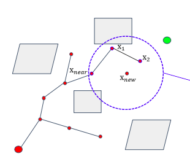
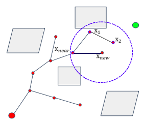
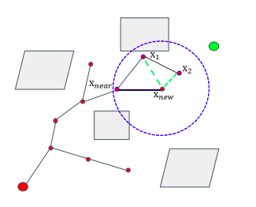
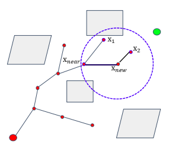

Rapidly-exploring Random Tree
-
介绍
- 通过在状态空间内随机撒点，控制路径树的生长点和生长方向
-
算法流程
输入：x_init, x_goal, Map
Tree.init()
for i = 1 to n
x_rand = Sample(Map)
x_near = Near(x_rand, Tree)
x_new = Steer(x_near, x_rand, StepSize)
e[i] = Edge(x_new, x_steer)
if CollisionFree(Map, e[i])
Tree.addNode(x_new)
Tree.addEdge(e[i])
if x_new == x_goal
Success()
-
优劣势
- 比RMP更加具有方向性
- 非最优解
- 效率低
- 在整个空间中采样
-
改进方式
- 用KDTree存储路径树中的点，加速查找x_near
- Bidirectional RRT，从起点终点一起生长，直到两者相交
RRT*
-
算法流程
输入：x_init, x_goal, Map
Tree.init()
for i = 1 to n
x_rand = Sample(Map)
x_near = Near(x_rand, Tree)
x_new = Steer(x_near, x_rand, StepSize)
if CollisionFree(Map, e[i])
xs_near = NearC(Tree, x_new)
x_min = ChooseParent(xs_near)
e[i] = Edge(x_new, x_min)
Tree.addNode(x_new)
Tree.addEdge(e[i])
Tree.rewire()
if x_new == x_goal
Success()
-
细节展示
- ChooseParent，如图所示，x_new是由x_2生长出来的，但不是直接将x_2作为x_new的父，而是从一个固定的半径范围内选择到达x_new的总路程最短的节点作为父节点。


- Tree.rewire()


Kinodynamic-RRT*
-
核心
- 主体结构与RRT*相似，但细节需要改进
- 采样(Sample)
- 不同于在欧式空间内采样，该方法要求在全状态空间内采样(位置、速度、加速度、时间)
- 求Tree上最近节点
- 不同于用欧式距离衡量远近，这里用状态转移的代价来衡量，简单的说可以用状态转移的\(jerk + T\)。如果采样的时候没有对T进行采样，还需要加一步求最优\(T\)。这个也就是个OBVP过程。
-
技巧
- 在找Tree中最近节点的时候，实际上对树中的每个节点都求了一次OBVP，效率低下。
- 为了节省时间，我们可以设置一个cost tolerance \(r\)。
- 求解能够在消耗cost小于\(r\)的前提下到达x_rand的全状态边界范围(范围内的Tree上的节点构成后向可达集)，和x_rand所能到达的全状态边界范围(范围内的Tree上的节点构成前向可达集)
- Near()和ChooseParent()操作都在前后两个可达集里面进行，减小了遍历范围。
- Rewire()操作在前向可达集中操作
AnyTime-RRT*
-
核心
- Keep optimizing the leaf RRT tree when the robot executes the current trajectory Anytime Fashion
- 先快速构建一个RRT,获得一个可行解并记录其代价.之后算法会继续采样,但仅将有利于降低可行解代价的结点插入树中,从而逐渐获得较优的可行解
-
优势
- 提高实时性
Informed RRT*
-
核心
- 先快速构建一个RRT，获得一个可行路径。在可行路径的外包椭圆内继续采样点，构建新的，代价更低的路径
- 不断循环上一个步骤，通过缩小采样空间，提高了效率